Technologies: sensor design, analog electronics, STM32, embedded firmware, data visualization
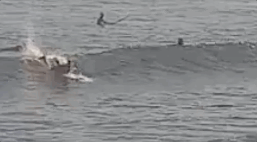
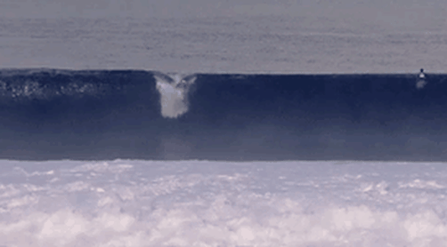
Figure 1: Beginner / advanced pop-up
In surfing, the pop-up is the transition from catching a wave to riding it. It's important for all levels - a good pop-up lets beginner surfers catch more waves and advanced surfers get into the proper position for their first maneuver.
The pop-up can be practiced on land, but usually without feedback. I wanted to build a device that would provide that feedback so people could improve their pop-up faster
Before building, I wanted to see if anything like this was already available and what tech I could leverage.
There were a few mats with printouts for hand and foot placement, and some mechanical balancing devices, but nothing that provided the digital feedback I imagined.
I wanted to build a device that could measure pop-up speed, final body position, and weight distribution, along with a way to track progress over time.
I looked into existing ways of detecting weight distribution electrically, looking for existing solutions I could retrofit.
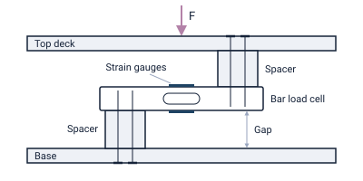
Figure 2: Load cell mount, side view
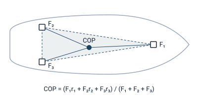
Figure 3: Load cell layout, top view
Load cells were my first idea. A beam load cell (Figure 2) has strain gauges that change resistance as its metal body flexes. Three of them under a board (Figure 3) can find the center of pressure and time the pop-up. But three readings can't describe a pressure pattern, since many different stances produce the same measurement. I wanted to see where the hands and feet actually land and what the weight distribution looked like.
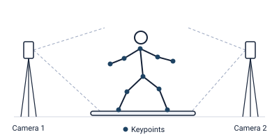
Figure 4: Markerless pose estimation (e.g. OpenCap)
Next I came across camera-based pose estimation. Two or more cameras film the pop-up, and a neural network finds the joints in each frame. Since the camera positions are known, a line can be drawn from each camera through a joint, and where the lines meet gives that joint's 3D position (Figure 4). This is a cool approach that needs nothing but cameras. It can measure pop-up duration, track how the body moves, and capture the final stance, like foot spacing and knee bend. However, it can't measure force, so it can't tell how the weight is split between the hands and feet. Calibrating the cameras is also a lot of extra work and would limit where this trainer can be used.
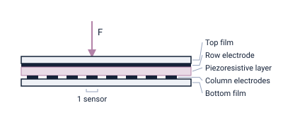
Figure 5: Pressure sensor array, side view
Figure 6: 192-sensor grid, top view
I then looked at traditional pressure sensors. These have a piezoresistive material sandwiched between two conductive layers, and its resistance changes as force varies. Applying a voltage across the layers and measuring the current gives the force.
A single sensor only measures the area it covers, but spreading many of them across the board gives a pressure map (Figure 6). The more sensors, the higher the resolution.
Instead of buying many pre-made sensors, I could make my own large array and scale the resolution to whatever I need.
Piezoresistive sensors seemed the most promising. Before building my own, I checked for pre-made products I could retrofit, like the Wii Balance Board and the foot pressure scanners at running stores. The Wii Balance Board is cheap, but it's just four load cells, so it has the same limits as above, and it's much smaller than a surfboard. The running store scanners do map pressure, but they're expensive, sized for one person's feet, and make it hard to get the raw data out.
| Approach | Measures | Drawback |
|---|---|---|
| Load cells | Force, center of pressure, timing | No pressure pattern |
| Pose estimation | Body motion, timing, final stance | No force; camera calibration |
| Piezoresistive sensors | Pressure map of hands and feet, timing | Custom build |
| COTS components | Center of pressure or foot pressure map | Too small; expensive or hard to get raw data |
At this point, I have some pretty solid requirements. I want a popup timing accuracy of 50ms, a clear capture of the weight placement and distribution of the hands and feet, and some way to visualize and keep track of this data.
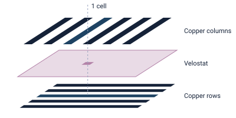
Figure 7: Pressure sensor layers, exploded view
The pressure sensor uses the standard piezoresistive layout: a Velostat sheet between two layers of copper strips running at right angles, where each crossing forms one sensor (Figure 7).
The spacing comes from the smallest feature I wanted to resolve. Feet (~25 cm) and hands (~10 cm) are large, but details like the heel of the hand or the outer edge of the foot are around 3 cm. Sampling those at least twice means a sensor every 1.5 cm, so I used 1 cm copper strips with 0.5 cm gaps.
There's room to cut down the number of sensors, since much of the board is never touched. To keep things simple, I started by covering the full board.
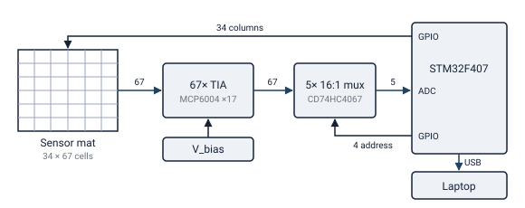
Figure 8: Sensor readout, block diagram
Given the 34 × 67 layout, there are 2,278 sensors on the mat, and all of them need to be read fast enough to capture the pop-up, since the transitions are the interesting part. To hit the 50 ms timing target, I aimed to scan the full mat 50–100 times a second.
The mat is scanned a column at a time. Driving one column powers all 67 sensors in it at once, and each row has its own amplifier that turns the small current through a pressed sensor into a voltage. The ADC then steps through those 67 outputs before moving to the next column.
The STM32 doesn't have 67 analog inputs, so five multiplexers pass the amplifier outputs to the ADC, five at a time. This results in the architecture shown in Figure 8.
One concern was keeping the measurements independent. With a voltage divider, current leaks between cells: if three cells that form the corners of a rectangle are pressed, current sneaks through all three and into the fourth, so a cell nobody touched reads as pressed (Figure 9). That happens constantly during a pop-up, when two hands and a foot are down at once.
A diode on every column fixes it, but that's 34 more parts, each with its own voltage drop. Instead I used an op-amp per row (Figure 10). It holds every row at the same voltage, so any cell off the scanned column has that voltage on both sides and no current can flow through it. The leak paths disappear instead of being blocked.
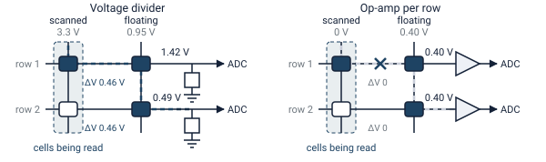
Figure 9: Divider vs. op-amp readout
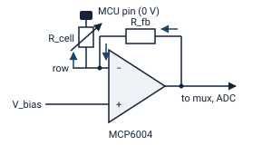
Figure 10: Row amplifier, one per row
Each frame is 2,278 readings at 2 bytes each, so about 4.6 kB. At 100 frames a second that comes out to 460 kB/s, or under 4 Mbit/s.
A serial connection over USB handles that. The STM32's USB runs at 12 Mbit/s and likely actually drops lower due overhead. Regardless, there's room to spare at my target frame rate. Latency isn't a concern either, since the analysis happens after the rep rather than live. We can tolerate transmission and processing overhead. We can even buffer frames and send them at later points.
Eventually I'd like to drop the cable and stream to a phone over Bluetooth or wifi.
The first tool I built plays a rep back frame by frame, shading each cell by how hard it's pressed.
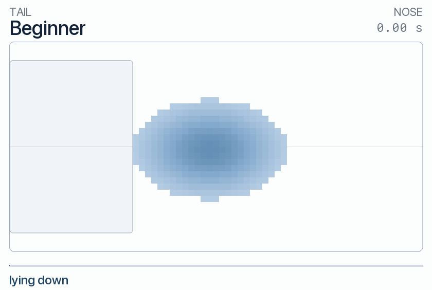
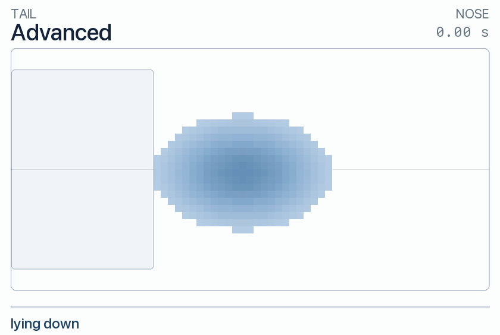
Figure 11: Pop-up pressure scans, beginner and advanced.
A pop-up can be broken down into five main states. At different levels, these skills states are transitioned through faster and with better form.
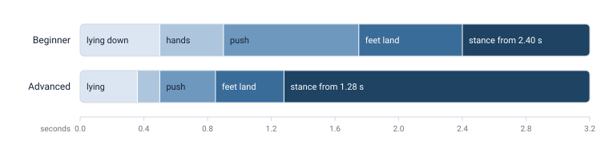
Figure 12: Pop-up states over time
The analyzer categorizes each of these and analyzes each individually. There are parameters (such as how close to the tailpad the back leg is and how far apart the feet are) that can be used to provide feedback at each state. A metric-based feedback approach seems sufficient here. However, it's also possible to add a neural network trained on good popups. I'd only add this complexity if the metric-based approach doesnt seem sufficient.
work in progress